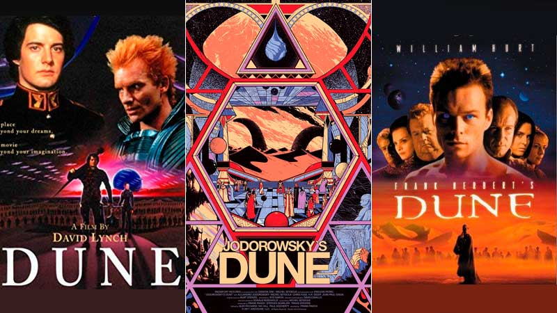

"Antiguas"
Dune (1984): Dirigida por David Lynch, esta película es una adaptación de la novela de Frank Herbert del mismo nombre. La película recibió críticas mixtas en su lanzamiento, pero ha desarrollado un estatus de culto a lo largo de los años.
Frank Herbert's Dune (2000): Esta es una miniserie de televisión de tres partes dirigida por John Harrison y basada en la novela Dune. Fue producida por Sci-Fi Channel (ahora Syfy) y recibió elogios por su fidelidad a la historia original y su capacidad para adaptar los complejos temas de la novela.